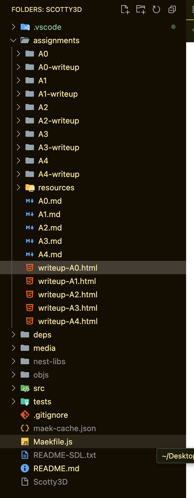

**Assignment 0 Report** AndrewID: twang3 (##) About this template * You can view
your writeup by opening it in a browser - right click this file and open with
your browser of choice. * Replace reference images with your own screenshots or
renders when applicable. * Include descriptions of any encountered problems and
the time you spent on each task. (##) A0T1 Step 1: Clone
or
Step 2: General Setup Visual Studio:
Node:
Nest-libs:
Step 3: Build and Run

(##) A0T2 Your completion of this task will be graded based on your
`test.a0.task2.problems.cpp` file and your responses to the below questions. For
each of the problems you solved in task 2, characterise the bug in your own
words and explain one other scenario that may cause this type of bug. Problem 1:
The first issue that I encountered was that the std namespace was not defined
for string on line 16. This problem arises when we are calling an instance of
string that is a member of the standard library but c++ natively doesn't
recognize it. The second issue was that there was no semicolon after the printf.
This arises when there is no delimiter between one line and the next. The final
issue was that cout was spelled wrong. Problem 2: The issue was that since
integer division will floor the final value to the lowest integer so the logic
beforehand wouldn't yield the correct answer as a part of the lambda expression.
This error can occur again if comparing the integer division of a and b doesn't
yield the same answer as a * the integer quotient. Problem 3: The .end() pointer
will point to the address right after the last value in the vector. To get the
last value in the vector, you need to grab the element in the end of the data structure instead.
Another scenario that will cause this type of bug is if the
iterative pointer is not pointing to a specific value in the actual data
structure, which will cause the retrieved pointer value to be undefined. Problem
4: The issue that was happening here was that we were comparing the boolean
equality of vec1 and vec2 with the value of vec3. Whenever vec3 was equal to 0,
this would translate to the boolean representation of false, which would then
accumulate count if vec1 and vec2 were unequal. To fix this, we need to compare
the value of vec1 with vec3 and vec2 with vec3. Another scenario that may cause
this type of bug is if the comparison is done with the wrong boolean operator,
which will cause the comparison to be incorrect. (##) A0T3 You do not need any
screenshots for this task. Your completion will be graded based on your `src`
submission. (##) Feedback Use this section to provide feedback about the
assignment.